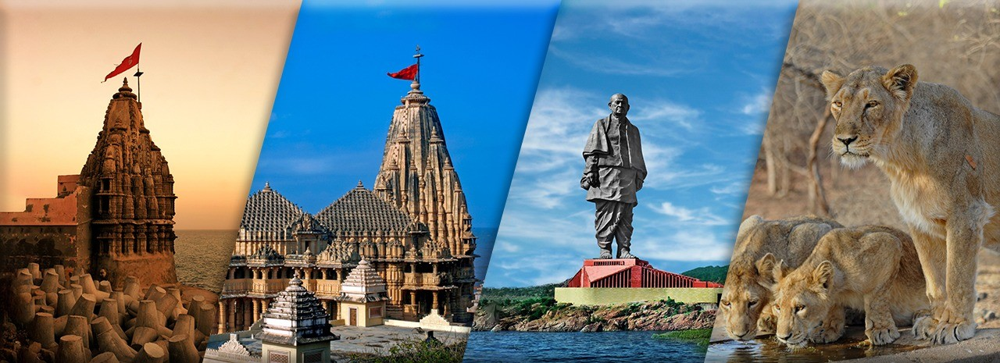

About Gujarat

Aavo Padharo, words of welcome in the language of Gujarat because it
is here that these words ring truly and the guest is 'God' and the
people of Gujarat are gregariously friendly, inviting and will entice
you to come again and again. Stretches out into the Arabian Sea, with
a hint of the desert and with a coastline of 1600 kms long is Gujarat
– the home state of Mahatma Gandhi, the Father of Nation. It is
renowned for its beaches, temple towns and historic capitals. Wildlife
sanctuaries, hill resorts and natural grandeur are gifts of Gujarat.
Sculpture, handicrafts, arts, festivals also make the state rich.
Gujarat is also among the most technologically advanced, housing the
largest petrochemical complex in the country. Gujarat has always been
a major centre for the Jains and some of its most interesting
locations are the Jain Temple centres at Palitana and Girnar Hills.
Besides the Jain temples, the state’s major attractions include the
only habitat of the Asiatic Lions in India (Gir Forests), a desert
ride at the Wild Ass Sanctuary and the beautiful Indo-Saracenic
Architecture of Ahmedabad. The colourful tribal villages of Kutch make
a visit unforgettable.
A state with an amazingly varied
topography ranging from the deep green of the dense forests to stark
white at the salt plains. Its 1660 kilometers coastline is home to
some of the most unique marine species and geographical locations at
the state makes it an ideal matrix, a melting pot of a vast variety of
culture, people, places and history due to eons of migratory
influences. Along with all the migrations came in various ritual
practices, cuisines, style of dresses, fairs and festivals,
celebrations all of which were amalgamated and became a part of what
this amazingly diverse state has to offer to you. This was possible as
a result of trade, commerce and the dexterity of the people of Gujarat
to accept and take in and make a part of all who come in here for
succour, conquest or trade.